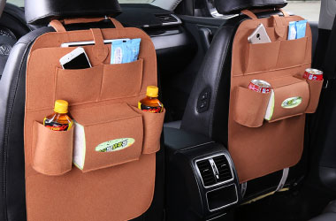

Соблюдайте порядок в вашей машине для приятной дороги и хорошего настроения!
Органайзер на спинку сидения автомобиля — это удобное изобретение, которое позволит вам сохранить порядок в машине. Наверняка, отправляясь в поездку, вы берёте с собой массу мелочей, которые хочется всегда иметь под рукой. Из-за нехватки места эти мелочи начинают расползаться по всему автомобилю: от бардачка до багажника. И зачастую их сложно найти. В наведении порядка Вам поможет органайзер. Он удобно крепится на спинку сидения, не мешает пассажирам и помогает навести порядок в машине.
Легко крепится. За подголовник переднего сидения автомобиля.
Тысяча мелочей. Всё необходимое будет находиться в одном месте.
Водонепроницаемая ткань. Легко чистится, защищает спинку сидения от загрязнений.